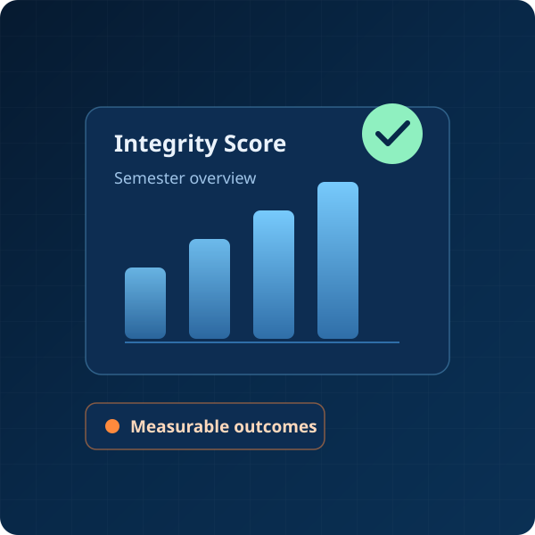

The Cost of Ignoring This Problem Is Too High
If this issue remains unresolved, academic credibility is at serious risk.
By 2025, experts predict that 90% of student assignments could be potentially AI-generated without proper preventive measures.
Education institutions need a proactive solution that evolves alongside AI technology, not a reactive approach that constantly plays catch-up.